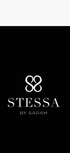
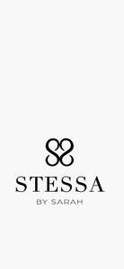

Trade Mark Journal No.2025/048 28 November 2025
UK00004291465 9 November 2025 (9,14,18,25,26,35)
Mark 1

Mark 2

- Class 9
- Downloadable virtual handbags; Fashion sunglasses; Laptop bags.
- Class 14
- Wristlets [jewellery].
- Class 18
- Bags; Tote bags; Luggage bags; Duffle bags; Toiletry bags; Drawstring bags; Belt bags and hip bags; Cross-body bags; Luggage, bags, wallets and other carriers; Crossbody bags; Leather bags; Belt bags; Clutch bags; Shoe bags; Messenger bags; Leather bags and wallets; Shoulder bags; Makeup bags; Hand bags; Travelling bags; Beach bags; Overnight bags; Leather shopping bags; Briefcases [leather goods]; Leather; Key cases [leather goods]; Leather and imitations of leather; Leather and imitation leather; Leather handbags; Imitation leather bags; Leather for shoes; Leather wallets; Leather purses; Leather suitcases; Handbags made of leather; Handbags made of imitations leather; Handbags; Handbags, purses and wallets; Clutch purses [handbags]; Fashion handbags; Pocketbooks [handbags]; Handbags for ladies; Ladies handbags; Straps for handbags; Clutch handbags; Handbags for men; Purse frames [handbags]; Purses [leatherware]; Purses; Slouch handbags; Evening handbags; Gentlemen's handbags; Purses, not of precious metal [handbags]; Cosmetic purses; Ladies' handbags; Gent's handbags; Clutches [purses]; Purses, not made of precious metal [handbags]; Clutch purses; Briefcases [leatherware]; Handbag straps; Leather coin purses; Travelling bags [leatherware]; Bags for clothes; Multi-purpose purses; Cosmetic bags; Luggage tags [leatherware]; Evening purses; Bags for sports clothing; Bags for umbrellas; Card wallets [leatherware]; Bags made of imitation leather; Straps for coin purses; Travelling bags made of imitation leather; Coin purses; Leather briefcases; Shoe bags for travel; Bags made of leather; Change purses; Make-up bags; Small clutch purses; Small purses; Garment bags for travel made of leather; Canvas shopping bags; Carry-all bags; Handbags, not of precious metal; Frames for coin purses [structural parts of coin purses]; Textile shopping bags; Carryalls; Travelling bags made of leather; Duffel bags; Carry-on bags; Grocery tote bags; Satchels; Garment bags; Billfolds; Chain mesh purses; Athletic bags; Backpacks; Flexible bags for garments; Duffel bags for travel; Pochettes; Travel bags; Bags for travel; Leather luggage tags; Adhesive tags of leather for bags; Briefcases made of leather.
- Class 25
- Footwear; Sneakers [footwear]; Insoles for footwear; Footwear [excluding orthopedic footwear]; Flip-flops for use as footwear; Athletic footwear; Footwear uppers; Uppers (Footwear -); Trainers [footwear]; Footwear for women; Casual footwear; Footwear for men; Pumps [footwear]; Leisure footwear; Beach footwear; Shoes; Children's footwear; Shoes for leisurewear; Footwear not for sports; Ladies' footwear; Slip-on shoes; Sneakers; High-heeled shoes; Leather shoes; Footwear for men and women; Sandals and beach shoes; Sandals; Boots; Booties; Ankle boots; Platform shoes; Leather slippers; Flat shoes; Shoes for casual wear; Knee-high stockings; Beach shoes; Men's sandals; Women's shoes; Leather garments; Leather clothing; Clothing of leather; Clothing made of leather; Leather jackets; Articles of clothing made of leather; Leather coats; Leather headwear; Footwear for sports; Sports footwear; Footwear for sport; Footwear for use in sport; Athletics footwear; Parts of clothing, footwear and headgear; Sports shoes; Sport shoes.
- Class 26
- Brooches [clothing accessories]; Buckles [clothing accessories]; Buckles for bags; Brooches for clothing; Belt buckles [clothing accessories].
- Class 35
- Business management of wholesale and retail outlets; Retail store services in the field of clothing; Online retail store services in relation to clothing; Online retail store services relating to clothing; Retail services in relation to footwear; Retail services in relation to clothing; Retail services in relation to downloadable virtual footwear; Online retail services relating to clothing; Retail services relating to clothing; Retail services in relation to fashion accessories; Retail services in relation to bags; Retail services in relation to headgear; Retail services in relation to downloadable virtual clothing; Online retail services in relation to downloadable virtual footwear; Online retail services relating to handbags; Retail services in relation to clothing accessories; Online retail services in relation to downloadable virtual clothing; Mail order retail services for clothing; Retail services in relation to downloadable virtual handbags; Online retail services in relation to downloadable virtual headwear; Online retail services in relation to downloadable virtual handbags; Retail services in relation to luggage; Online retail services relating to luggage; Mail order retail services for clothing accessories; Retail services connected with the sale of clothing and clothing accessories; Online retail services for downloadable virtual clothing; Retail services in relation to downloadable virtual headwear; Online ordering services; Mail order retail services connected with clothing accessories.
Stessa By Sarah Ltd